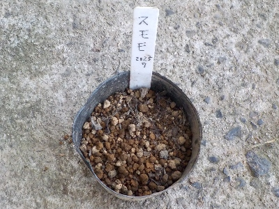

採り蒔きしたスモモのタネは目を出すかな？
食べたスモモのタネをポットにまきました。
更新日 : 2025/07/19

採り播きです。忘れないように名札も付けてます。
前回の実生は発芽後に枯れたので、次はちゃんと育てたいです。
なにげに放置時間が長いので心配になります。湿気った土での長期間は難しそう。
【おいしいものを食べよう。】【たくさん寝よう。】
【ソロ活をしよう!】【季節感のあることをしよう。】【動画視聴はほどほどに。】【当サイトの全てのコンテンツは無断転載禁止です。】